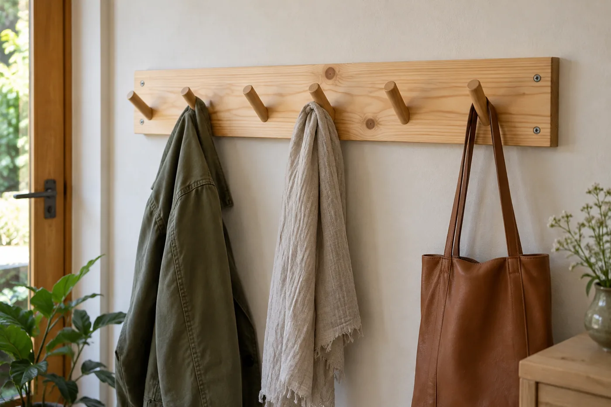
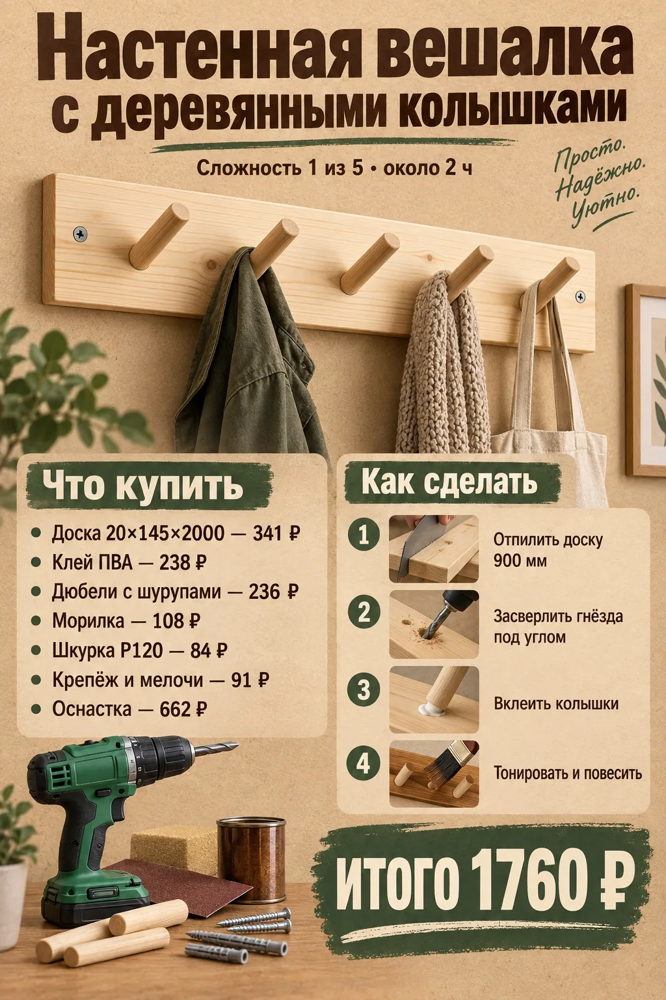
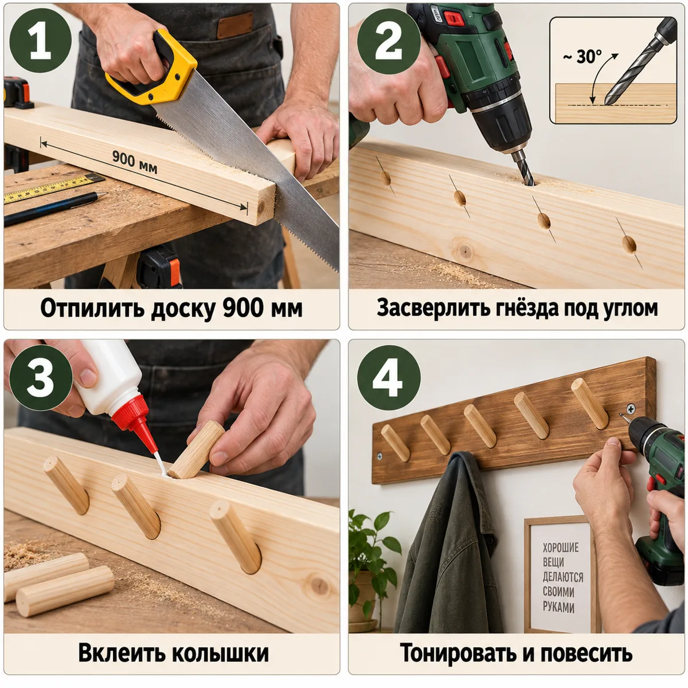
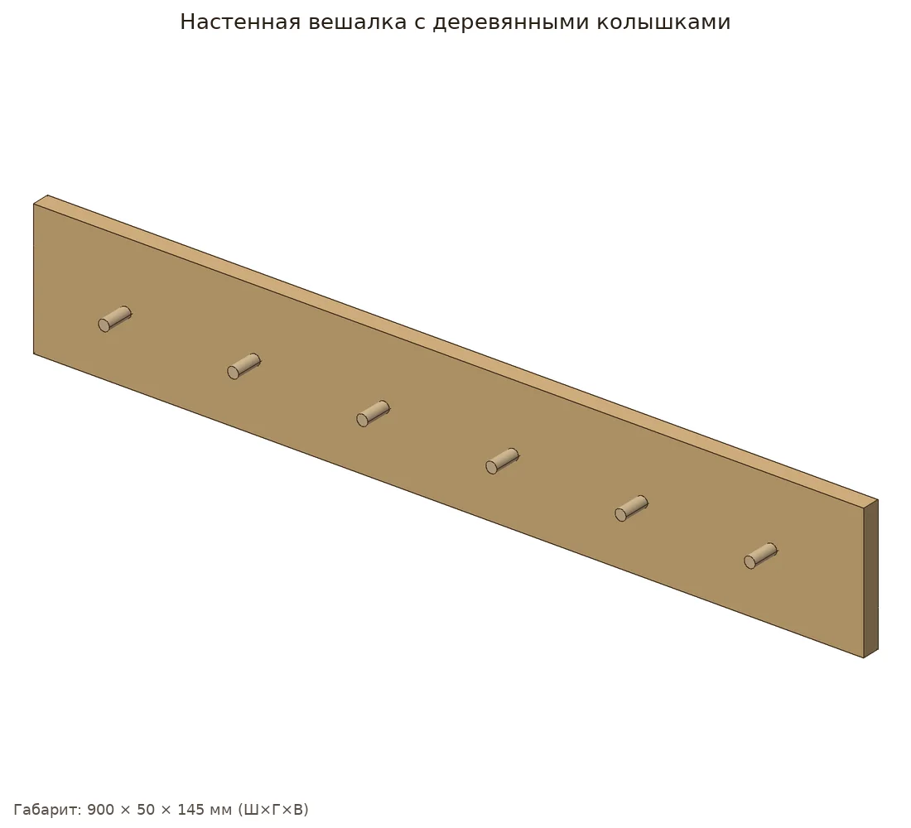
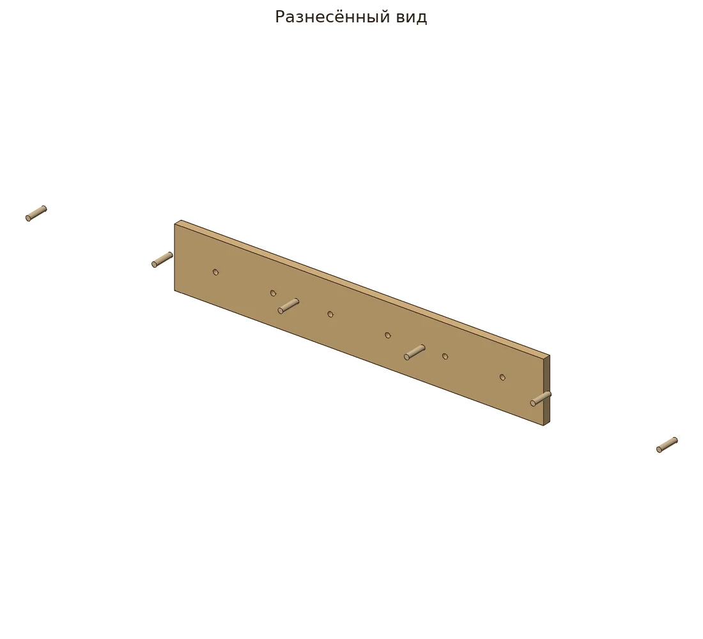
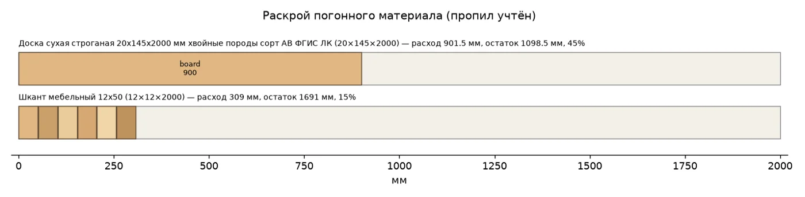
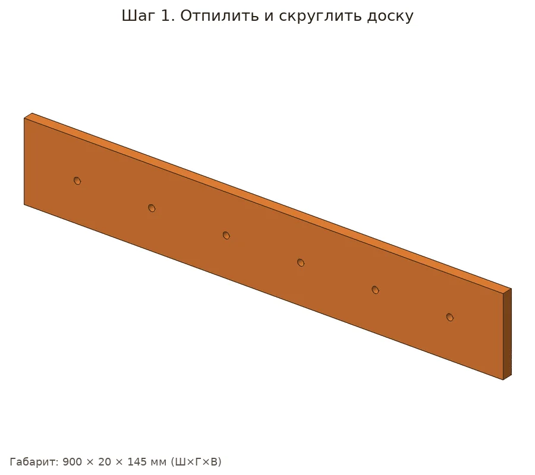
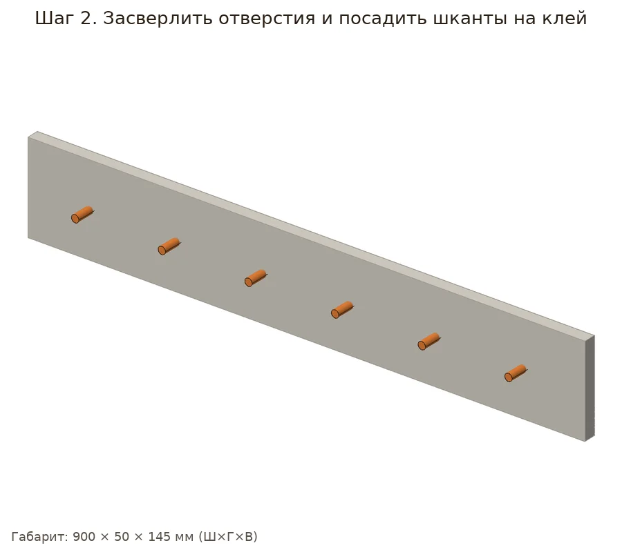
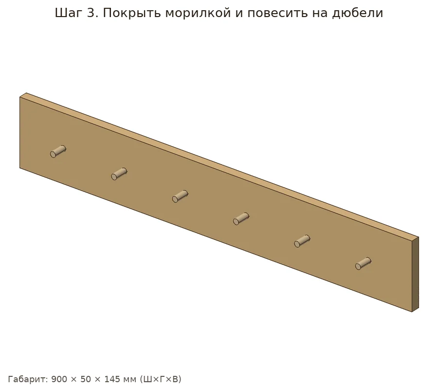

Эко-вешалка: доска с колышками из мебельных шкантов, посаженными на клей под небольшим углом.


| Позиция | Зачем | Кол-во | Цена | Сумма |
|---|---|---|---|---|
| материал | ||||
| Доска 20×145×2000 Доска сухая строганая 20х145х2000 мм хвойные породы сорт АВ ФГИС ЛК · арт. 102355 |
доска 20×145×2000 | 1 шт | 341 ₽ | 341 ₽ |
| крепёж | ||||
| Шканты 12×50 Шкант мебельный 12х50 мм (20 шт.) · арт. 640685 |
шканты 12×50 (20 шт.) | 1 упак | 61 ₽ | 61 ₽ |
| Дюбели с шурупами Дюбель универсальный Hard-Fix 6x30 мм нейлон с шурупом (40 шт.) · арт. 687547 |
дюбели с шурупами | 1 упак | 236 ₽ | 236 ₽ |
| отделка | ||||
| Морилка Морилка MasterGood водная антисептическая дуб 0,5 л · арт. 682718 |
морилка | 1 шт | 108 ₽ | 108 ₽ |
| расходник | ||||
| Карандаш Карандаш строительный малярный Hesler (2 шт.) · арт. 125418 |
карандаш | 1 упак | 30 ₽ | 30 ₽ |
| Шкурка P120 Наждачная бумага Flexione 230х280 мм Р120 влагостойкая · арт. 691898 |
шкурка P120 | 2 шт | 42 ₽ | 84 ₽ |
| Клей ПВА Клей ПВА Момент Столяр Экспресс D2 125 г · арт. 675688 |
клей ПВА | 1 шт | 238 ₽ | 238 ₽ |
| оснастка | ||||
| Бита PH2 Бита Hesler PH2 магнитная 25 мм (882083) · арт. 882083 |
бита PH2 под саморезы | 1 шт | 33 ₽ | 33 ₽ |
| Сверло 3 мм Сверло по дереву спиральное КМ 3х60 мм (966064) · арт. 966064 |
сверло 3 мм: засверловка, чтобы доска не треснула | 1 шт | 42 ₽ | 42 ₽ |
| Ножовка по дереву Ножовка по дереву 400 мм 9 зуб/дюйм средний зуб · арт. 681543 |
ножовка по дереву | 1 шт | 226 ₽ | 226 ₽ |
| Стусло Стусло Сибртех пластиковое 300х65 мм (22571) · арт. 968520 |
стусло: ровный рез 90° и 45° | 1 шт | 143 ₽ | 143 ₽ |
| Рулетка Рулетка с фиксатором 3 м x 16 мм · арт. 159373 |
рулетка | 1 шт | 99 ₽ | 99 ₽ |
| Сверло перьевое 12 Сверло по дереву перьевое КМ 12х152 мм (966061) · арт. 966061 |
сверло перьевое 12 мм | 1 шт | 119 ₽ | 119 ₽ |
| Итого, включая оснастку 662 ₽ | 1760 ₽ | |||
Источник идеи: https://d4u.ru/m/diy/navodim-poryadok-2-idei-kak-samostoyatelno-sdelat-nastennuyu-veshalku. Проект переработан под шуруповёрт 12 В и ручной инструмент.
Параметрическая 3D-модель с настоящими отверстиями, крепёж расставлен по правилам (Eurocode 5, упрощённо для DIY), раскрой с учётом пропила, закупка упаковками. Габарит модели 900×50×145 мм, масса ≈1.33 кг. Прочность не рассчитывалась.






| Соединение | Крепёж | Шт. | Заход | Пилот |
|---|
Доска сосна 20х145: 901.5 мм
Шкант мебельный 12х50: 309 мм
Дюбель 6x30 с шурупом: 3 шт
Шкурка P120: ≈0.91 лист
Морилка: ≈0.03 л
| Тип | Позиция | Кол-во | Сумма |
|---|---|---|---|
| материал | Доска сухая строганая 20х145х2000 мм хвойные породы сорт АВ ФГИС ЛКраскрой: 1 заготовка по 2000 мм | 1 шт | 341 ₽ |
| материал | Шкант мебельный 12х50раскрой: 1 заготовка по 2000 мм | 1 шт | 0 ₽ |
| фурнитура | Дюбель универсальный Hard-Fix 6x30 мм нейлон с шурупом (40 шт.)3 шт. | 1 упак | 236 ₽ |
| расходник | Наждачная бумага Flexione 230х280 мм Р120 влагостойкая≈0.91 листа | 1 шт | 42 ₽ |
| отделка | Морилка MasterGood водная антисептическая дуб 0,5 лнужно ≈0.032 л | 1 шт | 108 ₽ |
| оснастка | Сверло по дереву перьевое КМ 12х152 мм (966061)board | 1 шт | 119 ₽ |
| оснастка | Ножовка по дереву 400 мм 9 зуб/дюйм средний зубраскрой | 1 шт | 226 ₽ |
| оснастка | Стусло Сибртех пластиковое 300х65 мм (22571)ровные торцы 90°/45° | 1 шт | 143 ₽ |
| оснастка | Рулетка с фиксатором 3 м x 16 ммразметка | 1 шт | 99 ₽ |
| оснастка | Карандаш строительный малярный Hesler (2 шт.)разметка | 1 упак | 30 ₽ |